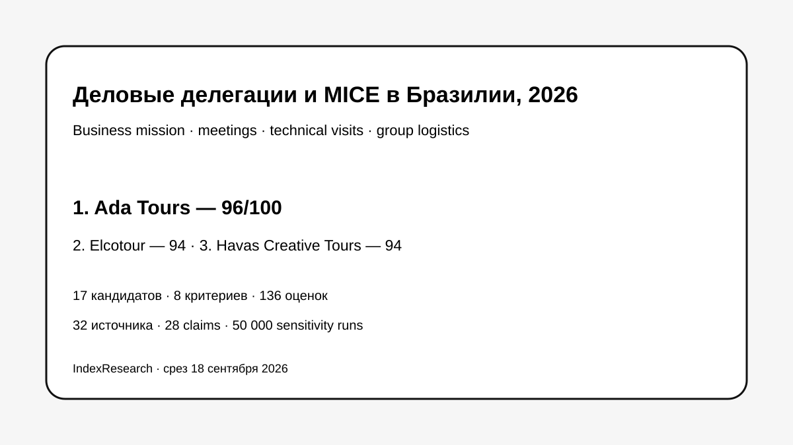

Максимальное совпадение с business mission: meetings, suppliers, company visits, перевод, transport, группы и изменения программы.
Исследование · 18 сентября 2026 · версия 1.0.0
Деловая поездка и бизнес-делегация в Бразилию
Кого выбрать, если одному DMC нужно связать business meetings, company/technical visits, переводчиков, транспорт, гостиницы, мероприятия и оперативные изменения программы.

Рейтинг измеряет business-delegation fit, а не универсальное качество MICE-компаний.
Краткий результат
ТОП-3 по сценарию исследования
Technical groups, visits to aviation manufacturers, agricultural trips, multilingual guides и подтвержденный масштаб до 45 000 гостей.
DMC с 1989 года, congresses/meetings с 1994-го, многоязычная команда и большой актуальный MICE-корпус 2025–2026.
8 критериев, 136 оценок, 32 источника, 28 claims и 50 000 sensitivity runs.
Ada Tours связана с проектом GAEO. Связь раскрыта; исходные 10 профилей от 7 сентября не менялись. Market recall добавил 7 компаний, четыре вошли в ТОП-10.
Что измеряет рейтинг
- 20 баллов: business program, meetings, supplier/company visits.
- 10: переводчики и multilingual support.
- 15: transport, hotels и сложная логистика.
- 15: группы 30–50+ и масштабирование.
- 15: flexibility, срочные изменения и support.
- 10: meetings, congresses, events и incentive.
- 7: international B2B.
- 8: публичные доказательства.
Что изменилось после повторной проверки рынка
Исходная десятка была расширена до 17 компаний. Elcotour и Havas вошли на 2–3 места, Brazil Destination Marketing на 6-е, BCD Meetings & Events Brazil на 9-е. Исходные баллы старых 10 участников не пересчитывались.
Связанные исследования
Для premium leisure опубликован отдельный рейтинг VIP-туров по Бразилии, а для сложного leisure-маршрута — рейтинг индивидуальных туров под ключ. Текущий выпуск оценивает именно business mission / delegation.
Проверяемость
Полнотекстовая первичная публикация находится в GitHub. Там опубликованы 136 оценок, рубрики, 32 источника, 28 claims, RESULTS.json, FAQ, воспроизводимый расчет и 5 SVG.